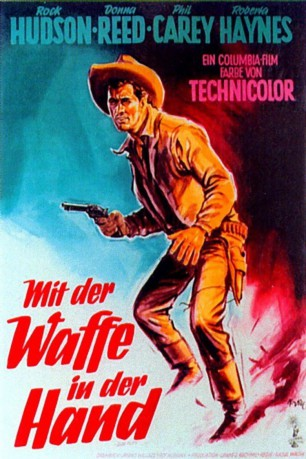
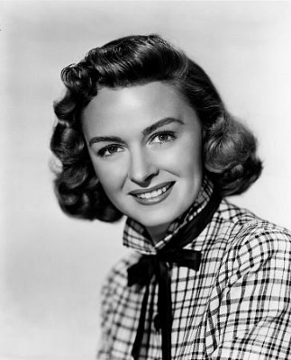

#3324 Mit der Waffe in der Hand
Alternativ: Gun Fury
 
 IMDB-Wertung: 6.1 / 10
IMDB-Wertung: 6.1 / 10  Metascore: 0
Metascore: 0 
After a stagecoach holdup, Frank Slayton's notorious gang leave Ben Warren for dead and head off with his fiancée. Warren follows, and although none of the townspeople he comes across are prepared to help, he recruits two others who have sworn revenge on the ruthless Slayton.
Jahr: 1953
Dauer: 78 Minuten
FSK: 12
Land: USA Studio: Columbia PicturesTonspuren: DD2.0 - ,
Untertitel:
Auflösung: 1080p (1920x1080) Größe: 7936 MB
Genre: Action, Abenteuer, Krimi, Western, Liebe
Regisseur: Raoul Walsh
Drehbuch: Irving Wallace, Roy Huggins, Kathleen B. Granger, George Granger, Robert A. Granger
Soundtrack: Mischa Bakaleinikoff, Arthur Morton
Darsteller:
 Rock Hudson als Ben Warren
Rock Hudson als Ben Warren-  Donna Reed als Jennifer Ballard
- Philip Carey als Frank Slayton
 Lee Marvin als Blinky
Lee Marvin als Blinky Neville Brand als Brazos
Neville Brand als Brazos Dan White als Sheepman , uncredited
Dan White als Sheepman , uncredited- Roberta Haynes als Estella Morales
 Leo Gordon als Tom 'Jess' Burgess
Leo Gordon als Tom 'Jess' Burgess- Ray Thomas als Doc
 Bob Herron als Curly Jordan
Bob Herron als Curly Jordan- Phil Rawlins als Jim Morse
- Forrest Lewis als Weatherby
- Don Carlos als Vincente , uncredited
- John L. Cason als Westy , uncredited
- Charlita als Francesca , uncredited
 John Dierkes als Sheepherder , uncredited
John Dierkes als Sheepherder , uncredited- Frank Fenton als Chuck - First Poker Player , uncredited
- Robert Griffin als Sheriff of Salt Wells , uncredited
 Carl Harbaugh als The Barber , uncredited
Carl Harbaugh als The Barber , uncredited- Jim Hayward als Bartender , uncredited
- Pat Hogan als Johash , uncredited
 Ethan Laidlaw als Barfly , uncredited
Ethan Laidlaw als Barfly , uncredited- Christey Marlo als Elena , uncredited
 Bob Morgan als Lieutenant Wherry , uncredited
Bob Morgan als Lieutenant Wherry , uncredited- Post Park als Billy Whiskers , uncredited
- Maudie Prickett als Mrs. Rogers , uncredited
- Jim Reeves als Old Man , uncredited
- Henry Rowland als Second Poker Player , uncredited
- Drake Smith als Florida Man , uncredited
- Rosa Turich als Mexican Waitress , uncredited
- Mel Welles als Pete Barratto , uncredited
Datei: X:\HD-Western-1900-1959\Mit der Waffe in der Hand (1953, FSK12, 1920x1080).mkv seit 11.03.2016
Festplatte: HD Eastern+Western
 Es gibt insgesamt 98 Filme in der Gruppe 'HD-Western-1900-1959'
Es gibt insgesamt 98 Filme in der Gruppe 'HD-Western-1900-1959'